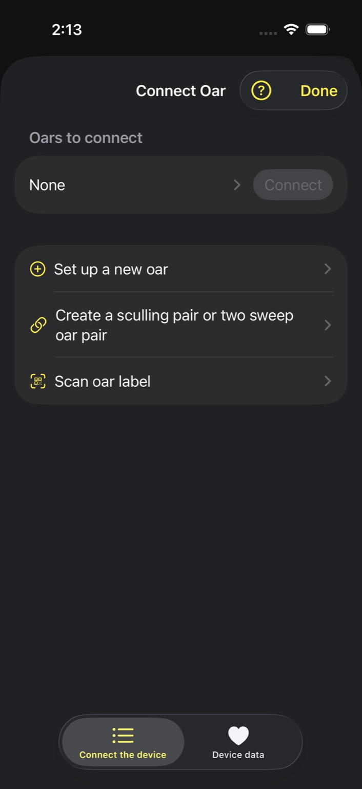
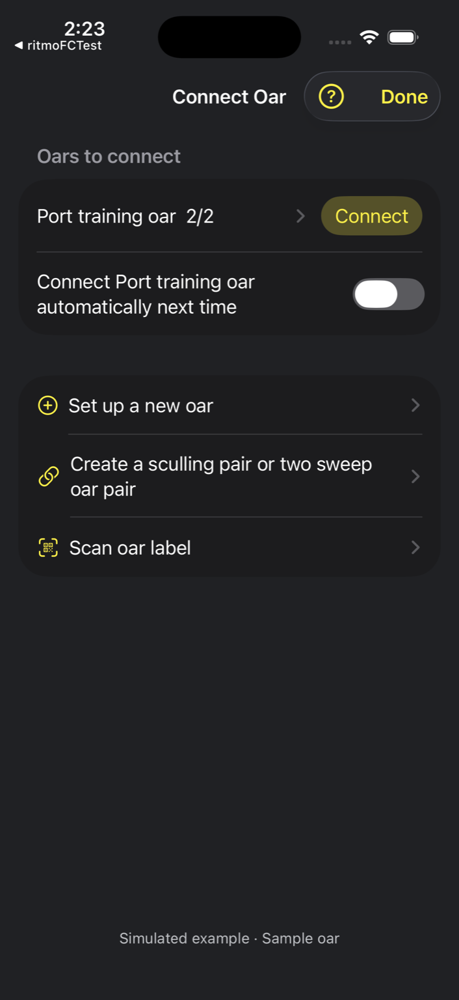
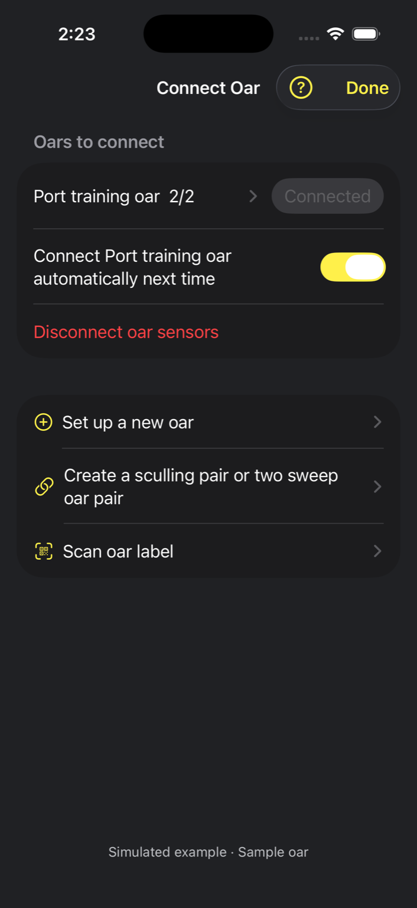
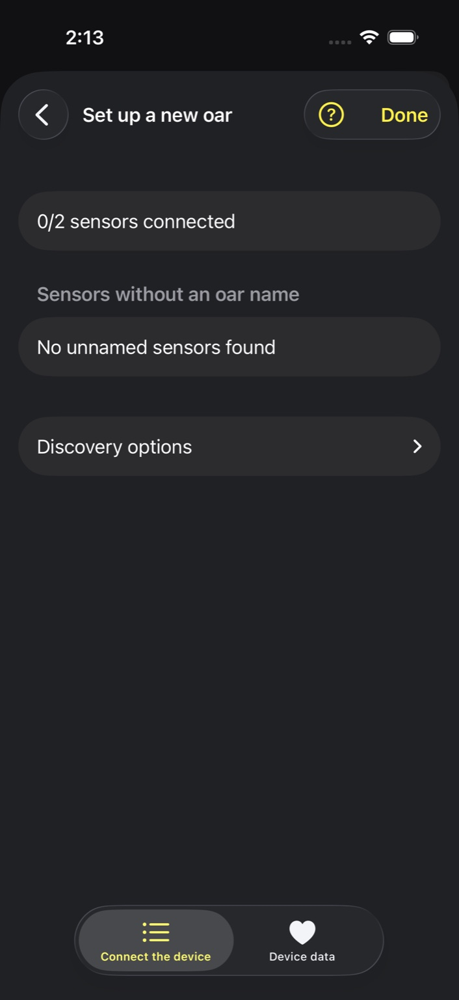
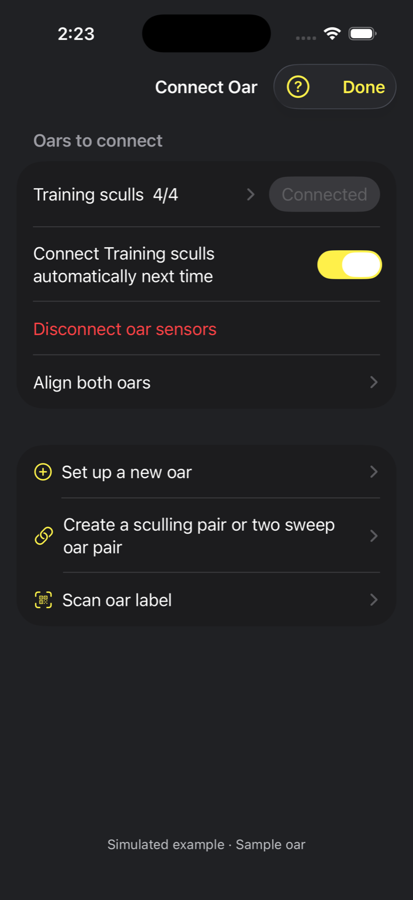

Connect your oar sensors
Turn on the two sensors mounted on your oar and open Connect Oar on Home. A saved oar remembers which sensors belong together.
Connect a saved oar
Open Oars to connect and choose the oar by name. The count beside it tells you how many sensors the phone can see. Tap Connect and wait for Connected before rowing. To reconnect at the next launch, turn on Connect [oar name] automatically next time.






Set up a new oar
- In Connect Oar, tap Set up a new oar. For a labeled oar, you can also use Scan oar label.
- Connect the two sensors mounted on this oar. If several sets are nearby, turn on just the pair you want to register.
- Enter an oar name, choose the side and type, then tap Save and connect.
Next, open Oar Settings to check the dimensions, alignment and stiffness for this oar. Repeat alignment if either sensor has moved.

Connect two oars
Save each oar first. For a sculling pair, use one port and one starboard oar. Two sweep oars can be on the same side.
In Connect Oar, tap Create a sculling pair or two sweep oar pair. Choose two saved oars with both sensors found, name the pair and tap Save and connect. With all four sensors connected, Align both oars guides you through the movements together.
If only one complete oar connects after five seconds, use it for this row or tap Keep looking. The pair stays saved for next time.

Troubleshooting
Check its power, move the phone closer and retry. Power-cycle the missing sensor if needed.
Confirm your saved oar and sensor pair. Set up new sensors away from other active pairs where possible.
Names with no nearby sensors found are hidden. Check sensor power and proximity, then reopen the choice list.
Disconnect there or close that app, then try connecting in RitmoForceCurve again.